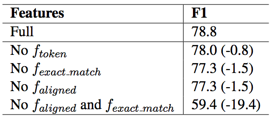

Machine Reading at Scale
Updated:
Danqi Chen et al.[1] instead of focusing on only (P,Q,A) tasks, came up with a bigger problem which is machine reading at scale.
To accomplish the task of reading Wikipedia to answer open-domain questions, they combined a search component based on bigram hashing and TF-IDF matching with a multi-layer recurrent neural network model trained to detect answers in Wikipedia paragraphs. I only focus on the neural network model.
Neural Network Model
This model can be summaried as 1) Paragraph feature vector extraction 2) Paragraph encoding 3) Question encoding and 4) Prediction.
Paragraph feature vector extraction: The feature vector of each token in paragraph is comprised of the following parts:
- Word embeddings: the 1000 most frequent question words will be fine-tuned.
- Exact match: three simple binary features is used to indicate whether the token can be exactly matched to one question word either in its original, lowercase or lemma form.
- Token features: $f_{token}(p_{i}) = (\mbox{POS}(p_{i}),\mbox{NER}(p_{i}),\mbox{TF}(p_{i}))$.
- Aligned question embedding : $f_{align}(p_{i}) = \sum_{j=1}^{|Q|}\alpha_{i,j}\vec{q}_{j}$, where alignment $\alpha_{i,j}$ caputures the similarity between passage word embedding $\vec{p}_{j}$ and question word embedding $\vec{q}_{j}$. Compared to the exact match features, these features add soft alignments between similar but non-identical words. $\alpha_{i,j}$ is computed as
$$
\alpha_{i,j} = \frac{\exp(\mbox{ReLU}(\vec{W}_a\vec{p}_i+\vec{b})\cdot \mbox{ReLU}(\vec{W}_a\vec{q}_j+\vec{b}))}{\sum_{j}\exp(\mbox{ReLU}(\vec{W}_a\vec{p}_i+\vec{b})\cdot \mbox{ReLU}(\vec{W}_a\vec{q}_j+\vec{b}))}
$$
Paragraph encoding: Paragraph feature vectors are taken as the input of multi-layer bi-LSTMs to get $\vec{h}_{i}^{p}$.
Question encoding: another recurrent neural network is applied on top of the word embeddings $\vec{q}_i$ and combine all hidden states into one vector $\vec{q}$:
$$
\beta_{j} = \frac{\exp(\vec{w}\cdot\vec{q}_{j})}{\sum_{j}\exp(\vec{w}\cdot\vec{q}_{j})}
$$
$$
\vec{q} = \sum_{j}\beta_{j}\vec{q}_{j}
$$
Prediction: a bilinear term is used to capture the similarity between $\vec{p}_{i}$ and $\vec{q}$ and compute the probabilities of each token being start and end as:
$$
P_{start}(i) \propto \exp(\vec{p}_{i} \vec{W}_{s} \vec{q})
$$
$$
P_{end}(i) \propto \exp(\vec{p}_{i} \vec{W}_{e} \vec{q})
$$
Analysis
Table 1 gives the feature ablation result. Without either Exact Match or Aligned Embedding the model still be able to achive F1 over 77%. However, if both of them are removed, the F1 score drops to 59.4%. So it seems these two features play a similar but complementary role.
Table 1 from [1]: Feature ablation analysis

Implementation Details
- 3-layer bidirectional LSTMs with h = 128 hidden units
- mini-batches of 32 examples each
- use Adamax
- Dropout with p = 0.3 is applied to word embeddings and all the hidden units of LSTMs
Comments
- Exact Match feature and Attention feature do function similarly. Exact Match is based on token identity and Attention feature is based on word analogy.
References
[1] Danqi Chen et al. Reading Wikipedia to Answer Open-Domain Questions. 2017